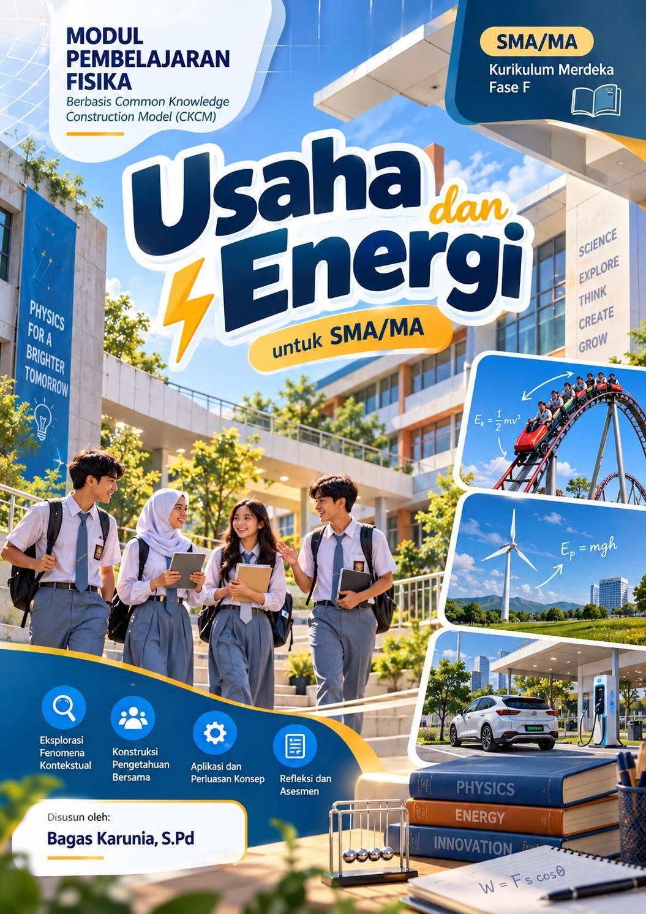

◉ MODUL PEMBELAJARAN CKCMMODUL INTERAKTIF · CKCMBELAJAR • MENCOBA • MENEMUKANModul Pembelajaran CKCMUsaha dan
Energi.
Bangun pemahamanmu tentang usaha dan energi. Jelajahi seluruh 46 halaman modul, tuliskan ide, dan gambarkan jawabanmu.
Buka PDF asli ↗ Unduh PDF

DAFTAR ISI
Jelajahi modul
46 halaman · 6 bagianPilih alat, lalu ketuk bagian halaman yang ingin diisi. Untuk pilihan ganda, gunakan “Klik pilihan”.
Gambar belum dapat dimuat. Muat ulang halaman atau buka PDF asli.